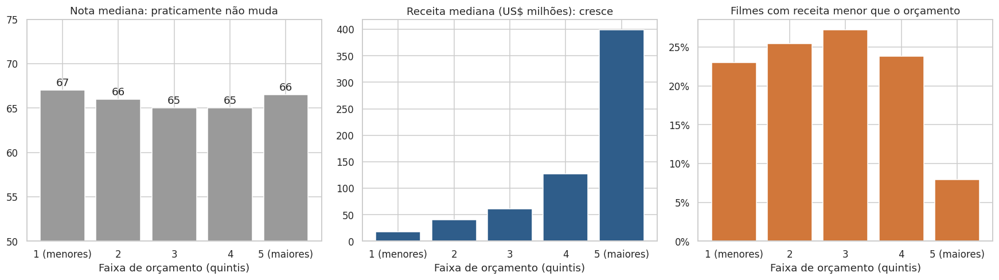

Contexto
Nota alta não garante dinheiro, e dinheiro não garante reputação. O cliente queria saber o que faz um filme ser bem avaliado, o que faz dar retorno financeiro e onde essas duas coisas não andam juntas.
As 9 perguntas foram propostas no Treinamento de Exploração e Análise de Dados e se dividem em três blocos: entender o cenário, aceitação do público e retorno x aceitação.
Dados
| Fonte | Uso |
|---|---|
| IMDB Movies Dataset (Kaggle) | Base original: 10.178 filmes de 1903 a 2023, 12 colunas |
| Wikidata (SPARQL) | Diretor de 7.787 filmes (80% da base), consultado em lotes de 100 títulos, com cache em CSV |
| Wikipedia | Identificação de 213 remakes |
A análise usa duas bases: 9.790 filmes para tudo o que envolve nota e 4.642 filmes (47%) para tudo o que envolve dinheiro.
Processo
O trabalho mais importante aconteceu antes dos gráficos:
| Problema | O que encontrei | Como resolvi |
|---|---|---|
| Receitas fabricadas | 33,4% das receitas com centavos; o mesmo valor de US$ 175.269.998,80 repetido em 143 filmes | Regra de confiabilidade: só os 4.642 filmes que passam em todos os testes entram nas análises de dinheiro |
| Bilheteria trocada | Titanic (1953) com a receita do Titanic (1997); 166 filmes duplicados com receitas diferentes | 177 duplicatas removidas; conflitos e homônimos fora das análises financeiras |
| Coluna "equipe" sem equipe | A coluna crew só trazia atores | Diretor buscado no Wikidata |
| Meu próprio filtro enviesado | A primeira regra exigia orçamento múltiplo de US$ 1 milhão e cortava filmes baratos e bem avaliados | Regra revisada: a base financeira passou de 3.838 para 4.642 filmes |

Achados
0,14
de correlação entre nota e receita
8%
dos filmes de maior orçamento faturam menos do que custaram, contra 23% a 27% nas outras faixas
35,5%
da variação da nota explicada pelo diretor, contra 21,0% do ator principal
O que os dados mostram
- Orçamento compra segurança, não qualidade: correlação de -0,04 com a nota e de 0,70 com a receita.
- Existe um padrão de sucesso por diretor: 116 diretores superam a nota esperada em pelo menos 80% dos filmes, contra cerca de 49 esperados por acaso.
- Franquia transfere dinheiro, mas não qualidade: a receita das continuações fica entre 0,91x e 1,10x a do primeiro filme, e a nota cai de 4 a 7 pontos.
- O retorno por dólar é o mais difícil de prever: nenhum fator explica mais de 6,3% do ROI.
Recomendações
| Se o objetivo é | Apostar em | Por quê |
|---|---|---|
| Retorno previsível | Continuações de franquias estabelecidas | Receita estável, com perda de 4 a 7 pontos de nota |
| Retorno alto com pouco capital | Terror de baixo orçamento | Maior ROI mediano entre os gêneros (3,32), com a menor nota (61) |
| Segurança de bilheteria | Orçamentos da faixa mais alta | Só 8% com receita abaixo do orçamento |
| Equilíbrio | Animação | Único gênero com sinal positivo em nota, receita e ROI |
| Reputação e retorno juntos | Diretores com histórico consistente | 122 diretores com nota acima do esperado e ROI acima da mediana |
Limitações
- Só 47% da base tem dado financeiro confiável.
- A base não tem o número de votos de cada filme: uma nota dada por 3 pessoas pesa igual a uma dada por milhões.
- O ROI usa bilheteria bruta e orçamento sem marketing, então serve para comparar grupos, não para medir o lucro de cada filme.
- Correlação não mostra causa.
Próximos passos
- Conferir bilheteria e custo no próprio Wikidata e trazer o número de votos do IMDb.
- Repetir o teste de diretores para roteiristas, produtores e estúdios.
- Construir um dashboard a partir da base analítica já exportada.
Stack
PythonPandasNumPyMatplotlibSeabornSPARQLWikidataGoogle Colab